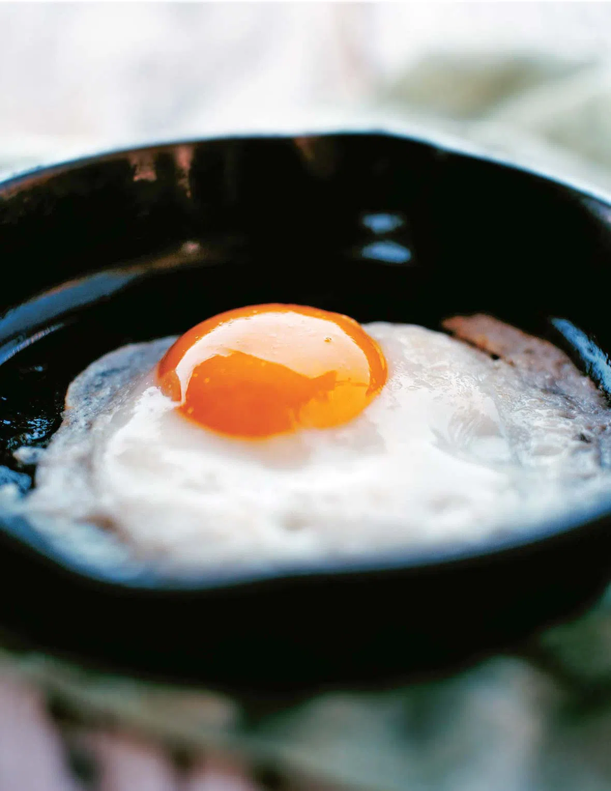

Fried Eggs
Chicken Parmesan

Description
How to make a perfect fried egg explains a tried-and-true method will give you a perfectly cooked egg
sunnyside up with a fully cooked white and soft yolk every single time. Includes how long to cook it.
Ingredients
- 1/2 teaspoon unsalted butter or olive oil
- 1 large egg
- 1 teaspoon water
- Salt and freshly ground black pepper
Steps
- Heat a small cast-iron or nonstick skillet over medium-high heat.
- Add the butter or oil and swirl it to coat the skillet. Immediately crack the egg into the skillet.
Add the water to the pan, reduce the heat to medium-low, cover, and cook for 1 minute.
- Remove the egg from the pan immediately. Season to taste with salt and pepper and serve.